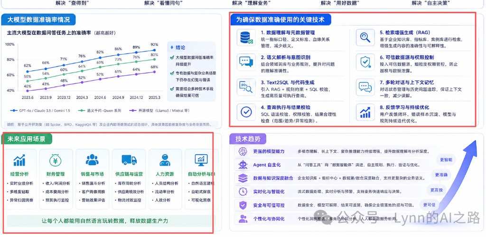

P012 · ASK / GEN QUALITY
出板内容质量升级 · 深度梳理
改造方案把业界三条主流程收进 OD：
语义层（度量契约）→
治理后再问（字段/枚举原则）→
自动可视化（先 Goal 再出图）。
对照行业「智能问数 Agent」路线：OD 已在大模型驱动（阶段4），短板是阶段3资产未喂进出板。
开源模块可照搬；禁止无适配整仓替换运行时。
提案 P012
三层流程已定义 · M1.5 Goal 已编码
2026-08-22
DataQ / open-dashboard
1. 背景与问题
P011 把对话迁到 opendashboard-dsh-harness（dsh）后，出板收成
od_generate_board one-shot：稳定、不易超时，但内容质量闸没有跟着迁全。
实跑常见「能出板、不好读」。
典型症状（产品实跑）
| 现象 | 用户感受 | 根因归类 |
|---|
| 「支付状态 · 商户费率」柱图 |
维和度量放一起不知道在讲什么 |
规划 = 第一个度量 × 第一个维度；无分析目标、无 measureKind |
图例显示 MchIncome |
字段名用户看不懂 |
直播查询系列名用原始字段名；未写 alias |
| 金额显示上千亿级「分」 |
单位不友好 |
生成带了 formatter，渲染未统一吃；缺数量级 |
| 半行空白、下方又有图 |
板面碎、不清晰 |
两列布局奇数行未拉满；偶发重复写入 |
| 两条查询条件 / 整板复制 |
像生成了两次 |
Agent 多次写板 + replace 未先清空 |
| 轴上 -1 / 0 / 2 / 3 |
状态码不可读 |
枚举未走 glossary / distinct 文案（属 P010） |
关键决策（用户确认）
禁止「禁费率」类个案补丁；废弃「板型槽位填充」主叙事。
改造方案集成三层：
A 语义（measureKind）→ B 治理（P010）→ C 先 Goal 再出图（LIDA 形）。
详见
§3。
2. 改动前流程（问数 · 出板 · 业界）
「改动前」= P011 落地后、P012 质量改造未吃透资产之前的真实双轨：
问数已是默认能力，出板已是独立斜杠；两边共用选表/部分知识，但口径与规划内核不同。
目标态双流水线见 §4。
2.0 双意图现状总览
会话入口（P011 dsh embed）
│
├── /ask 或自然语言问指标
│ → list → get_schema(+terms/questions) → run_query | run_sql
│ → enrich 会话卡 · 不写 draft
│
└── /board
→ list → plan_charts → generate_board → apply-patch → 右侧编辑器
（改动前 plan 内核 = 字段排序配对，非 Goal/LLM 规划）
2.1 问数现状流程（/ask · 已编码）
协议见 commands.js /ask；工具在 dsh-od-bi。
这是现在线上怎么跑，不是旁路口号。
用户 /ask
→
od_list_datasets
→
od_get_schema
→
od_run_query | od_run_sql
→
enrich + 会话卡
→
od_finish
# 问数端到端（改动前 / 现状）
① LLM 选表 od_list_datasets
② 装载上下文 od_get_schema
· fields（role/group/label）
· sample ≤3 行（SQLBot 式 peek）
· knowledge.terms（术语/部分维值）
· few-shot questions（NL→SQL 样例，可选）
· 未强制：confirmed indicator.agg → 约束模型 agg
③ 生成并执行
· od_run_query：LLM 填 category/value/agg → Java 结构化查
· 或 od_run_sql：LLM 写 SQL → sql-guard → 执行
④ 结果 enrich 0 行 insight · suggestChartType · formatter 提示
⑤ 会话展示 表/临时图 ephemeral · 禁止写 DashboardPatch
问数已有
能答、有闸、有知识注入
- 斜杠协议固定工具顺序
- schema + terms + few-shot 进上下文
- sql-guard + 权限数据集
- 空结果诚实 insight；自动选图类型
问数短板（P012 要对齐）
资产未完全约束执行
- 模型仍可 SUM 费率类字段（缺 measureKind 硬闸）
- 维值多在 terms，轴文案一致性弱于出板目标态
- 与出板装载路径分叉：同一 /dimensions 未统一喂 generate
- 无「分析目标列表」——一问一答，不做整板
2.2 业界问数怎么做（对照「改动前」）
问数不是 OD 发明的；业界主路径高度同构。下表对照现状 OD 已对齐什么、还缺什么。
| 环节 | SQLBot | Joy DataAgent | Vanna 类 | OD 问数现状 |
|---|
| 选数/选表 |
DS / Dataset |
TableRAG / 选表 |
训练库映射 |
od_list_datasets |
| 知识进上下文 |
术语 + 维值 XML + 训练对 |
DGP 后再问 + 字段裁剪 |
DDL/SQL 向量 |
terms + questions + sample；指标 agg 未硬闸 |
| 生成查询 |
LLM → SQL |
NL2SQL（主） |
LLM → SQL |
run_query 或 run_sql |
| 执行前闸 |
权限 / 规则 |
SQL 规则 + Measure.agg |
弱～中 |
sql-guard；缺 Joy 级 agg 硬约束 |
| 结果展示 |
表/图，嵌入 DE |
会话内联图 |
表为主 |
会话卡 + enrich |
| 写经营看板 |
不写 DV |
报告后置，≠ draft |
通常无 |
不写 draft（与业界一致） |
# 业界问数共识流水线（几乎所有 ChatBI）
选数据源 → 注入元数据/术语/样例 → LLM 生成查询 → 闸 → 执行 → 会话可视化
↑
OD 现状已覆盖这条链；差距在「语义口径硬约束」与「和出板共用装载」
2.3 出板改动前流程（/board · M1.5 Goal 之前）
用户 /board
→
od_list_datasets
→
od_plan_charts
→
od_generate_board
→
apply-patch
→
右侧编辑器
规划内核（问题所在）
// planChartsFromFields（改动前逻辑本质）
measures = pickByRole(measure) // 按原文加权排序
dims = pickByRole(dim)
m0 = measures[0]
dim = dims[0]
KPI(count) + KPI(m0, m1) …
bar = dim × m0 // SUM 默认 —— 费率也会被 SUM
pie = dim2 × m0
line = time × m0
table= dim × m0
改动前 · 规划
有字段就能出图
- 无 additive / ratio 区分
- 配对由排序第一名决定
- message 既加权又间接决定「谁配谁」
- 质检偏布局/碎饼/毛线，弱于「内容意图」
- 未读 /dimensions 已确认指标进 plan
改动前 · 写入
能落 draft，偶发叠层
- Agent 可能 generate + compose / 多次 apply
- replace 收集 stale 后插入新 id，竞态时清不干净
- FE normalize 把重叠组件往下推 → 看起来像「复制一整板」
端到端示意（出板 · 改动前）
schema(group=q/d/t) + profile(optional)
│
▼
pick top measures / dims by overlap(message)
│
▼
pair first×first → encode SUM
│
▼
review: 同维去饼 / 高基数 / 裸时间戳 / 单位分 formatter …
│
▼
layout 两列循环（奇数行易留白）
│
▼
apply-patch (replace，弱清空)
│
▼
DashboardEditorHost 渲染（系列名/单位偶发未吃 formatter）
2.4 改动前：问数 × 出板已复用 / 未复用
| 能力 | 问数 | 出板（改动前） | 问题 |
|---|
od_list_datasets |
✓ | ✓ |
已复用 |
| knowledge terms / questions |
✓（get_schema） |
△ 弱 / 未进 generate 主路径 |
分叉：问数吃知识，出板主要吃裸 schema |
| confirmed indicator.agg |
△ 未硬闸 |
× 未合并 |
两边都缺 P0 接通 |
| run_query / run_sql |
✓ |
× 协议禁止 |
正确隔离 |
| plan / generate / patch |
× |
✓ |
正确隔离；出板规划内核差 |
一句话
改动前问数已经是「业界 ChatBI 形状」；出板是「字段配对填槽」。
P012 要做的不是重造问数壳，而是语义资产统一喂两边，并把出板规划升到 Goal（§3–§4）。
3. 改造方案 · 三大核心流程（明确定义）
业界能稳定出经营看板的产品，几乎都不是「LLM + 裸 schema 直接拼图」。
OD 的改造方案显式集成下面三层；每一层有独立契约、落点与边界，合起来才是完整出板质量路径。
集成原则（2026-08-22 修订）
A/B/C 是能力分层，不是必须保留的自研 API 名。
业界开源好用的模块可以直接照搬/改编进仓（prompt、数据结构、枚举→图、agg 契约、自修复规则）；
仍禁止：无适配整仓替换（第二套 Cube 查询面、LIDA 出 matplotlib 再转板、Python harness 复活当主路径）。
落地必须接到现有：Java BI / od_* / DashboardPatch / 编辑器 encode。
LAYER A · SEMANTIC
语义层 · 度量契约
对标：Cube · WrenAI MDL · Cortex · 本仓 /dimensions 指标
- 业界做什么
- 度量预定义
type = sum | avg | count；Agent 选指标名，不现场发明口径。
- 可照搬
- 度量元数据形状（name / field / agg / unit）；Wren/Cube YAML 里 measure 条目的字段集；SQLBot/Joy 对「指标名→字段+agg」的注入格式。
- OD 落点
- 优先接通已有
de_indicator（知识维护已确认的 agg），再启发式补洞；出板读 confirmed metrics，不只读 schema。
- 不整仓
- 不部署独立 Cube/Wren 查询服务当出板引擎；公式/join 语义平台本期不做。
LAYER B · GOVERNANCE
治理后再问 · 字段与枚举原则
对标：JoyDataAgent DGP · TableRAG · SQLBot dimension-values · 本仓 /dimensions
- 业界做什么
- 先治理表/字段/枚举，再问数；脏码值不直接上轴。
- 可照搬
- SQLBot
<dimension-values> / 术语注入块；Joy TableRAG「选表选字段」的裁剪与打分思路（改编进 schema 加厚，不搬整套 RAG 服务）。
- OD 落点
- P010 glossary + 枚举值；出板/问数只读 confirmed；轴文案与 kind 回写走管理面。
- 不整仓
- 不把 Joy 整仓 data_agent 当对话运行时；治理 UI 继续收敛在知识维护，不另起平台。
LAYER C · AUTO-VIZ
自动可视化 · Goal → Chart
对标：Microsoft LIDA（Summarizer / GoalExplorer / VizGenerator / critique）
- 业界做什么
- summary → 枚举 goal(question, visualization, rationale) → 为每个 goal 生成图 → 自评估/修复。
- 可照搬
- LIDA 的管线与 JSON 目标结构（question / title / rationale）；Goal 提示词骨架；critique 维度清单。Viz 输出改写成 OD
encode，不要 matplotlib 代码。
- OD 落点
od_plan_charts 展示 goals；生成可走「确定性模板」或「LLM GoalExplorer + 确定性 review 闸」双模，闸门不可跳过。- 不整仓
- 不把 LIDA Python 包当主进程；不恢复已删的 Python harness 出板主路径；Infographer/IGM 不做。
推荐集成形态（可替换自研细节）
下面是能力顺序；方括号内是优先照搬来源，不是必须自研。
# 改造方案总流程（可照搬模块）
[A 语义] confirmed indicators / schema
│ ← 照搬：Cube/Wren measure 元数据形；接 /dimensions 指标 agg
│ Agent 选指标名，不发明 SUM(费率)
▼
[B 治理] glossary · dimension-values · 字段角色
│ ← 照搬：SQLBot 注入块；Joy 选字段裁剪思路
│ （出板只读；治理异步）
▼
[C 自动可视化]
summary? → enumerateGoals(question, viz, rationale)
← 照搬：LIDA GoalExplorer 结构 / 提示词
→ chart encode（OD DashboardPatch，非 matplotlib）
→ review / repair ← 照搬 LIDA critique 维度 + 确定性规则
→ layoutBoardPatch
│
▼
od_plan_charts 展示分析目标
│
▼
od_generate_board 一次写入 · 强 replace · 编辑器
| 层 | 优先照搬（模块） | 本地 refs / 上游 | 接到 OD 哪里 |
|---|
| A |
measure：name + field + agg + unit |
Cube schema / Wren MDL measure；本仓 de_indicator |
loadSchemaAndProfile 合并 → measureKind / encode.agg |
| B |
术语 + 维值注入；选字段 |
refs/sqlbot · refs/joyagent-jdgenie-data_agent |
knowledge API → ask schema；出板轴 alias / 枚举 |
| C |
Goal JSON + critique 清单 |
microsoft/lida GoalExplorer |
enumerateGoals / plan 展示；reviewCharts |
| 旁路 |
一问一 SQL |
SQLBot / Vanna |
P006；不替代整板 Goal |
与旁路能力的关系
| 能力 | 代表 | 在改造方案中的位置 |
|---|
| ChatBI / 问数 |
SQLBot、Vanna、P006 |
一问一图旁路；可共用 A/B；不替代整板 Goal 规划 |
| 人编 BI |
DataEase、Metabase |
提供 encode/formatter 渲染；不负责自动出经营板质量 |
4. 问数 + 出板双流水线（流程图 · 复用 · 业界）
OD 对话是双意图：默认问数（一问一答，不写画布），显式出板（多 Goal → draft）。
本节画清两条流、标出复用工具，并对照业界问数怎么设计。
工具级时序见 §5；Goal 提示词见
goal-planning-design.md。
确定性 规则/代码 ·
LLM 推理 ·
混合 Agent+闸 ·
人工 确认
4.0 双意图总览
用户自然语言 / 斜杠命令
│
├── /ask 或闲聊问指标 → 问数轨（会话表/临时图，不写 draft）
│
└── /board 或「生成看板」→ 出板轨（Goal 列表 → 确认 → draft → 右侧编辑器）
共用底座（两条轨都吃）
/dimensions 确认资产 · workspace 权限 · schema · knowledge(terms/维值)
od_list_datasets · （装载侧）Java BI internal API
4.0.1 问数流水线（/ask · 目标态）
用户：「/ask 各支付状态下商户入账合计」
│
▼
┌───────────────────────────────────────────────────────────┐
│ A1 编排 [混合] │
│ LLM 选工具：od_list_datasets → od_get_schema │
│ 解决：选对表；把术语/维值/few-shot 塞进上下文 │
└───────────────────────────────────────────────────────────┘
│
▼
┌───────────────────────────────────────────────────────────┐
│ A2 语义装载 [确定性 · 与出板共用知识] │
│ schema + sample(≤3) + terms + questions +（目标）指标 agg │
│ 解决：模型看见「入账→MchIncome」「0→订单生成」 │
└───────────────────────────────────────────────────────────┘
│
├──── 结构化查询 ────┬──── 自由 SQL ────
▼ ▼
┌──────────────────┐ ┌──────────────────────────────┐
│ A3a od_run_query │ │ A3b od_run_sql │
│ LLM 填维/度量/agg│ │ LLM 写 SQL 文本 │
│ Harness 执行查询 │ │ sql-guard 闸后再执行 │
└──────────────────┘ └──────────────────────────────┘
│
▼
┌───────────────────────────────────────────────────────────┐
│ A4 结果 enrich + 展示 [确定性 + Node] │
│ 0 行 insight；suggestChartType；表/图卡（会话内 ephemeral）│
│ od_finish；禁止把结果行写入 DashboardPatch │
└───────────────────────────────────────────────────────────┘
| 阶段 | 解决问题 | LLM？ | 关键技术（行业八项） |
|---|
| A1 编排 | 选数据集、工具顺序 | 是 | ⑦ 多轮 |
| A2 装载 | 术语/维值/指标口径进上下文 | 否 | ①⑤ 元数据 · RAG |
| A3 生成查询 | 可执行、不越权 | 是（写 SQL/填 encode） | ③ Text2SQL+规则 |
| A3 闸 | 禁写、表白名单、多语句 | 否 | ④⑥ 校验·权限 |
| A4 展示 | 可读答案；空结果诚实 | 否 | ④ 结果合理性 |
4.0.2 出板流水线（/board · 目标态）
用户：「/board 按支付状态看入账」
│
▼
┌───────────────────────────────────────────────────────────┐
│ B1 编排 [混合] list → plan_charts →（确认）→ generate×1 │
└───────────────────────────────────────────────────────────┘
│
▼
┌───────────────────────────────────────────────────────────┐
│ B2 探查装载 [确定性 · 与问数共用 knowledge/指标] │
│ schema + profile + 能力卡（additive/ratio/dim/time） │
└───────────────────────────────────────────────────────────┘
│
▼
┌───────────────────────────────────────────────────────────┐
│ B3 Goal 规划 [LLM 为中心 + 可选确认] │
│ 能力卡 → LLM goals → clarify/确认 → bind+kind 闸 │
│ （详见 goal-planning-design.md） │
└───────────────────────────────────────────────────────────┘
│
▼
┌───────────────────────────────────────────────────────────┐
│ B4 生成质检布局 [确定性] encode → review → layout → patch │
└───────────────────────────────────────────────────────────┘
│
▼
┌───────────────────────────────────────────────────────────┐
│ B5 写入展示 [确定性] 强 replace → 右侧编辑器直播查数 │
└───────────────────────────────────────────────────────────┘
| 工具 / 能力 | 问数 /ask | 出板 /board | 复用方式 |
|---|
od_list_datasets |
✓ | ✓ |
完全复用：选表入口 |
| Java schema / knowledge / glossary / indicator |
✓（经 get_schema） | ✓（经 plan/generate 装载，P0/P1 对齐） |
共用语义资产；出板待接通 metrics/维值 |
od_get_schema |
✓ 主用 | △ plan 内自拉，可不经此工具 |
装载逻辑同源；问数多 sample/terms/questions |
od_profile_dataset |
△ 可选 | × 出板禁止（generate 内带 stats） |
统计能力复用，调用策略不同 |
od_run_query / od_run_sql + sql-guard |
✓ | × 禁止 |
问数专用；出板用 encode 在编辑器侧查 |
| ask-enrich（选图 / 0 行 insight / formatter） |
✓ | △ 出板 FE formatter 同类思想 |
展示层可复用规则，管道不同 |
od_plan_charts / Goal / bind |
× | ✓ |
出板专用 |
od_generate_board / layout / apply-patch |
× | ✓ |
出板专用；问数不写 draft |
od_finish |
✓ | △ 可选 |
会话收尾复用 |
measureKind / confirmed agg |
✓（目标：约束 SQL/结构化 agg） | ✓（绑 Goal） |
应用层复用同一套口径 |
复用原则
复用的是语义资产 + 选表 + 口径；不复用「写画布」与「会话查数」两条执行出口。
问数结果卡本期不「一键落板」；整页写入只走出板轨（与 P006 边界一致）。
4.0.4 业界问数流程怎么设计（对照）
| 方案 | 典型流水线 | 知识怎么进 | 校验 | 和看板关系 | OD 对齐 |
|---|
| SQLBot |
选 DS/Dataset → RAG 术语/训练 → LLM SQL → 跑数 → 表/图 |
glossary + few-shot + dimension-values |
规则/权限；嵌入 DE 不写 DV |
旁路，不写画布 |
问数轨形状；注入形改编 |
| Joy DataAgent |
NL2SQL → 结果 + 内联图 →（可选）报告 |
DGP 治理后再问；TableRAG 选字段 |
SQL/洞察规则 |
问数主路径；报告后置 |
「先答再落配置」；agg 约束 |
| Vanna 等 |
训练 DDL/SQL → 生成 → 执行 |
向量训练对 |
弱～中 |
通常无经营看板 |
不引入第二套栈 |
| Cube/Wren |
人选指标名 → 语义层编译查询 |
MDL/Cube 模型 |
查询层强 |
指标消费，非 Chat 主 UI |
借 measure 契约给问数/出板 |
| DeerFlow |
通用 Agent plan/澄清/工具 |
非 BI 专用 |
沙箱/工具 |
无问数语义 |
只借鉴澄清节奏 |
| OD（本仓） |
list → schema(+knowledge) → run_query|run_sql → enrich → finish |
/dimensions + knowledge API |
sql-guard + 权限数据集 |
问数 ephemeral；出板独立 Goal 轨 |
— |
# 业界问数共识（OD 已对齐的部分）
1. 先 Schema/知识，再让模型写查询（禁止裸库瞎写）
2. RAG/术语/维值提高专有数据准确率（行业技术⑤）
3. 执行前闸：只读、表白名单、权限（③④⑥）
4. 结果在会话展示；写经营看板是另一条意图（SQLBot/Joy 均如此）
# OD 相对业界多出来的
出板轨：多 Goal +（目标）LLM 规划确认 + DashboardPatch（非 HTML 报告当真相）
4.1 场景夹具 S1（出板）
商户订单出板
数据集 t_pay_order · 用户 /board 按支付状态看入账
| 字段 | label | 角色 | /dimensions 已确认时 |
|---|
Status | 支付状态 | dim | 0→订单生成 · 2→支付成功 · 3→失败 |
Amount | 支付金额,单位分 | measure | 指标 SUM · unit 分 |
MchIncome | 商户入账,单位分 | measure | 指标 SUM（message「入账」加权优先） |
FeeRate | 商户费率 | measure | 指标 AVG → ratio |
CreateTime | 创建时间 | time | 无日桶则不做趋势图 |
PayOrderId | 支付订单号 | junk | 排除出轴/度量 |
4.2 分阶段设计（作用 · 技术 · 问题 · S1 轨迹）
阶段 ① 编排 · Agent 选工具
混合
解决什么问题：用户一句话进来后，谁决定「先规划还是直接写板」？避免模型自己拼 patch、跑大表 GROUP BY 探活。
输入
用户原话 message；会话里的 /board 命令人格
输出
工具调用序列：od_list_datasets → od_plan_charts → od_generate_board（一次）
用什么技术：
- LLM 理解主题、选数据集（多个候选时）
- 确定性 命令模板强制：必须先 plan 再 generate；禁止
od_run_sql 出板
业界对照：阶段 5 Agent「多工具协同」的薄实现；不是全自主规划引擎。
# S1 轨迹
message = "按支付状态看入账"
→ 匹配数据集 t_pay_order
→ 调用 od_plan_charts(datasetId, message) 先展示目标
→ 调用 od_generate_board(同一 message) 只一次
× 禁止：自己拼 DashboardPatch / live probe GROUP BY
阶段 ② 数据探查 / 语义+治理装载
确定性
解决什么问题：还不知道表里有什么、金额能不能 SUM、状态码怎么读，就规划一定会出「状态×费率」。
内部小流程（顺序固定）：
②a 拉 schema（字段名/类型/group）
②b 拉 profile（distinctCount / min-max / 角色线索） ← 统计探查，非 LLM
②c 合并 knowledge.metrics → aggDefault / measureKind ← A 语义，接 /dimensions
②d 合并 glossary + dimension values ← B 治理
②e 启发式补洞（仅当无 confirmed）
输入
datasetId；Java /schema · /profile-dataset · /knowledge
输出
增强字段表：role · measureKind · aggDefault · alias · valueMap
用什么技术：
- 确定性 JDBC/schema API、直方图式 profile、字典合并
- 人工 事先在 /dimensions 确认指标/维值（异步，出板只读）
- LLM 本阶段不用（探查不靠模型猜口径）
业界对照：Cube/Wren 的 measure 元数据；SQLBot 知识注入；Joy Measure.agg。OD 用确认制资产，不部署第二套语义服务。
# S1 装载结果（目标）
Status role=dim valueMap={0:订单生成, 2:支付成功, 3:失败}
Amount kind=additive agg=sum unitHint=分
MchIncome kind=additive agg=sum ←「入账」加权优先作 compare value
FeeRate kind=ratio agg=avg ← 绝不可进 bar SUM
PayOrderId role=junk ← 排除
CreateTime role=time dayBucket=false → 不做 trend
阶段 ③ 分析规划（Goal Explorer）· 修订：LLM 为中心
LLM 规划
用户可确认
Harness 口径闸
解决什么问题：规则模板只能覆盖「有维就 compare」类骨架，对模糊主题、多候选维/度量、要不要趋势/构成，效果上限低。
规划应以 LLM 枚举/排序分析问题为主，必要时反问用户确认；Harness 只卡「能不能这么绑字段」。
开源怎么做规划（对比）
| 方案 | 谁出「计划」 | 人怎么参与 | 口径/正确性谁管 | 对 OD 的启示 |
|---|
| LIDA |
LLM GoalExplorer：question + viz + rationale |
人点选 goal 再可视化 |
弱（靠 prompt + 后评估） |
规划必须 LLM；人可选 goal |
| DeerFlow |
LLM Plan Mode（write_todos）自主拆步 |
ask_clarification 中断等人答（HITL） |
工具/沙箱侧，不是度量语义层 |
模糊就反问；计划可见 |
| Joy plan&executor |
LLM 先 plan 再 executor |
产品侧可审计划 |
Measure.agg 等数据模型约束执行 |
LLM 计划 + 结构化度量约束执行 |
| SQLBot / ChatBI |
LLM 一问一 SQL（非整板 Goal 列表） |
多轮澄清常见 |
RAG 术语 + SQL 校验 |
问数路径已类似；出板需多 Goal |
| Cube/Wren |
不做 NL 规划；人选指标名 |
建模阶段人工 |
语义层硬约束 |
约束在执行前，不替代 NL 规划 |
| OD 旧案（纯规则） |
模板 enumerateGoals |
几乎无确认 |
强（kind/R10） |
口径好、覆盖差 → 要改 |
OD 目标态（三拍）
③a 候选能力卡 [Harness 确定性]
增强字段表 → 告诉模型「合法积木」：
dims[] / additive[] / ratio[] / timeBuckets[] / 禁 junk
（不是最终 goal 列表）
③b LLM 规划 [LLM 为中心]
输入：用户 message + 能力卡 + 少量 few-shot
输出：goals[] = { question, intent, fields?, rationale }
可调用澄清（仿 DeerFlow）：
· 多数据集 / 维度量歧义 / 主题过宽
→ 反问 1 个问题，等用户答完再规划
也可先给出草案，请用户「确认/删改目标」再 generate
③c 绑定与闸 [Harness 确定性 · 不可跳过]
goal → encode：只允许能力卡内字段
measureKind：ratio 不得 SUM 上 compare/table
reviewCharts + 展示 plan；用户确认后才 od_generate_board
输入
message + 能力卡（schema/profile/knowledge）+ 可选用户确认
输出
已确认 goals[] → 经闸后的 encode；对话可见 question 列表
用什么技术：
- LLM 枚举/排序/删减分析问题（对标 LIDA GoalExplorer + Joy plan）
- 混合 澄清/确认（对标 DeerFlow
ask_clarification；dsh 多轮即可，不必换宿主）
- 确定性 能力卡 + kind 绑定 + review（对标 Cube 口径，执行侧）
- 纯规则
enumerateGoals 降为无模型/失败降级与单测基线，不再当主路径唯一规划器
为何规则不够：「看看经营情况」「别画构成要趋势」「入账用 Amount 还是 MchIncome」等，模板加权覆盖不稳；LLM + 一问确认更贴业务。
# S1 目标交互（LLM 规划 + 可选确认）
能力卡: Status(dim) Amount/MchIncome(additive) FeeRate(ratio) …
LLM 草案:
1. 各支付状态下的商户入账对比
2. 支付状态构成占比
3. 商户入账合计
Agent 可选反问: 「入账用商户入账还是支付金额？」→ 用户选商户入账
Harness 绑定: Status×MchIncome SUM；FeeRate 不得进对比柱
plan 展示 → 用户默认确认或点「按此生成」→ generate
完整提示词、能力卡 JSON、/board 协议、逐步跑通表：
goal-planning-design.md（方案定稿 · M1.6 待编码）
提示词要点（摘录）
System：你是出板分析规划器。根据用户主题 + 能力卡输出 3～6 个 Goal。
硬规则：compare/table 只用 additive；ratio 仅 kpi_ratio+avg；禁用 junk；
trend 需 dayBucket；只输出 JSON（mode=goals|clarify）。
User：用户主题：{{message}}
能力卡：{{capabilityCardJson}}
Plan 展示后固定句：回复「确认」按此生成；或说明要增删的目标。
Clarify：只问 1 个短问题，本轮不 generate。
阶段 ④ 内容生成（编码 · 质检 · 布局）
确定性
解决什么问题：Goal 如何变成可查询的图？坏图（碎饼、毛线、比率 SUM、半行留白）如何在写入前杀掉？
④a chartsFromGoals：intent → type + encode(category,value,agg)
④b reviewCharts：R1–R10 自修复（同维去重、高基数、裸时间戳、ratio 禁 SUM…）
④c layoutBoardPatch：查询条 + KPI 行 + 对比并排≤2 + 折线全宽 + ≤1 表
④d 产出 DashboardPatch（ops），仍不跑大表聚合探活
输入
goals[] + 增强字段
输出
patch（set_layout / upsert_chart / query…）
用什么技术：
- 确定性 gen-board.js（照搬 LIDA critique维度、Joy 行数规则，但实现成规则引擎）
- LLM 本阶段不用（生成路径禁止模型手写 patch）
为何不做 LIDA 式「LLM 写 matplotlib」：OD 画布契约是 DashboardPatch encode，不是可执行绘图代码；可靠性和单测要求高。
# S1 生成后
charts: kpi×2 + bar(Status,MchIncome,sum) + pie(Status,count) + table
line: 已丢（CreateTime 无日桶 · R3）
FeeRate: 仅当被点名才留 AVG kpi；S1 message 未点名则可不出现
layout: 两对比并排 36+36；无半行空洞
阶段 ⑤ 写入与可视化展示
确定性
解决什么问题：补丁如何落成用户看得见的图？如何避免叠板、字段名、分单位失控？
⑤a od_generate_board → apply-patch（强 replace：先清空 draft 再写）
⑤b 编辑器按 encode 发起查询（直播）
⑤c 渲染：fieldCfg.alias · valueMap 轴映射 · formatter 分→元/万/亿
⑤d 用户可改图；可选回写 indicator/profile（反馈闭环）
输入
DashboardPatch
输出
右侧可编辑看板；对话区保留 Goal 列表可追溯
用什么技术：
- 确定性 Java PatchApplier · FE editorCore / ECharts
- LLM 不参与渲染
# S1 用户看见
轴：支付成功 / 订单生成 … 不是 2 / 0
图例：商户入账 不是 MchIncome
数值：12.3 万（元） 不是上千亿「分」
查询条：一条；重新生成不叠板
4.3 一张表：每阶段技术选型
| 阶段 | 核心问题 | 主技术 | LLM？ | 现状缺口 |
|---|
| ① 编排 |
工具顺序、禁止野路子 |
dsh 命令/工具描述 |
混合（选库） |
基本可用 |
| ② 探查装载 |
口径与码值从哪来 |
schema+profile+knowledge |
否 |
出板未合并 metrics/维值（P0/P1） |
| ③ 规划 |
要回答什么问题 |
LLM Goal + 确认 + 能力卡闸 |
是（主路径） |
现行为规则；目标改 LLM（见上） |
| ④ 生成质检 |
坏图谁拦 |
review + layout |
否 |
闸门已有 |
| ⑤ 展示 |
人能不能读 |
编辑器查询渲染 |
否 |
维值映射待接；alias/formatter 大部有 |
| 旁路问数 |
一问一 SQL |
Text2SQL + sql-guard |
是（写 SQL） |
与出板共用 ② 的 knowledge |
4.4 规划特写：用户问题如何变成 Goal
# 不是：LLM 自由发挥「我觉得应该画张热力图」
# 而是：
用户问题 ──┬──→ ② 装载后的字段能力（有哪些 dim/additive/ratio/time）
│
└──→ 原文加权（「支付状态」「入账」命中哪些字段）
│
▼
模板实例化 Goal 列表
│
├── 能力不足？不生成该 goal（如无日桶 → 无 trend）
├── kind=ratio？只准 kpi_ratio，不准 compare SUM
└── 展示给用户（plan）→ 同一套 goals 进 generate
质量点：规划阶段就把非法绑定消灭，而不是出图后再「禁费率」。
4.5 「数据探查」边界（避免误解）
OD 出板探查 = 元数据探查
- schema / profile 统计 / 已确认知识
- 不跑全表 GROUP BY 试错
- 真正取数发生在 ⑤ 编辑器按 encode 查询
不做的探查
- 生成前 live probe（易超时、打断会话）
- 用 LLM 猜「这个字段是不是费率」当唯一依据
- LIDA 式先拉 CSV 再 summary（可选实验，非主路径）
4.6 场景矩阵（仍挂在流水线上）
| 场景 | 原话 | 卡在哪一阶段 | 优化 |
|---|
| S1 状态+入账 | /board 按支付状态看入账 | ② 未接指标/维值 → ③/⑤ 变差 | P0+P1 |
| S2 问数 | /ask 各状态入账 | 旁路 Text2SQL；② 知识已部分通 | 与出板共用装载 |
| S3 只谈费率 | /board 看商户费率 | ② kind + ③ 只出 AVG KPI | P0 |
| S4 重生成 | 再生成 | ⑤ 强 replace | 已做，守住 |
| S5 无确认资产 | /board（空知识） | ② 降级启发式 + ④ R10 | 不阻断；催 F1 确认 |
4.7 优化优先级（挂到阶段）
| # | 做啥 | 阶段 | 技术 |
|---|
| P0 | 出板合并 confirmed metrics → kind/agg | ②c | 确定性字典合并 |
| P1 | 维值 → 轴/图例映射 | ②d + ⑤c | 照搬 SQLBot values 形 |
| P2 | 确认流可改 AVG；知识维护 UX | F1 / ② 上游 | 人工+产品 |
| P3 | 可选 LLM 润色 Goal 文案 | ③ | LLM，不改 encode |
一句话
规划 = LLM 枚举分析问题（可反问确认）+ Harness 能力卡/kind 闸；
探查装载与生成质检仍确定性；展示 = 编辑器查数。
不用 LLM 自由写 patch；口径仍靠② /dimensions + ③c 闸。
5. dsh Harness · 工具定义与真实执行流
产品对话表面不是「LLM 直接画图」，而是
DeepSeek dsh Agent 运行时 + 本仓插件 opendashboard-dsh-harness
（profile od-conversation）注册的一组 od_* 工具。
LLM 只负责选工具、填参数、说人话；探查、规划内核、质检、写板、SQL 闸在 Harness / Java。
5.1 运行时分层（谁干什么）
浏览器 OD AppShell
│ iframe / embed → dsh Web (:3090)
▼
┌─────────────────────────────────────────────────────────────┐
│ dsh Host（@deepseek-ai/dsh） │
│ · 会话 / 模型调用 / 工具循环（ReAct 式：想→调工具→看结果→再想） │
│ · 斜杠命令、消息渲染 Node │
└─────────────────────────────────────────────────────────────┘
│ 加载 profile od-conversation
▼
┌─────────────────────────────────────────────────────────────┐
│ OD 插件（Harness 能力 · 确定性代码） │
│ dsh-od-bi 注册 od_* 工具 · /datasets /ask /board 命令 │
│ dsh-od-auth 注入 workspaceId / userId / token │
│ dsh-od-nodes 表/图/看板预览 Node（产品卡） │
│ gen-board.js enumerateGoals / review / layout（出板内核） │
│ sql-guard.js 只读 SQL 校验（问数） │
└─────────────────────────────────────────────────────────────┘
│ HTTP internal
▼
┌─────────────────────────────────────────────────────────────┐
│ Java BI（:8082） schema · profile · knowledge · query · patch │
└─────────────────────────────────────────────────────────────┘
│
▼
右侧 DashboardEditorHost（按 encode 直播查询渲染）
LLM 的能力
- 读用户原话 / 斜杠命令改写后的指令
- 选择下一步调哪个
od_*、填 datasetId / message
- 多数据集时追问或按名称匹配
- 把工具结果组织成对用户说的话
- 问数路径：在 schema 约束下起草 SQL（仍经 sql-guard）
Harness / Java 的能力（非 LLM）
- 工具
execute：拉 schema、knowledge、跑查询、写 patch
enumerateGoals / measureKind / review / layout- SQL 白名单表、禁写、禁多语句
- 强 replace 写 draft；编辑器查数与 formatter
- 禁用 bash/fs：不能读仓改文件
5.2 斜杠命令（进入执行流的入口）
实现：packages/dsh-od-bi/src/commands.js。命令本身不调模型，只把一段强制协议文案当作用户消息注入，再由 LLM 按文案选工具。
| 命令 | 注入给 Agent 的协议（摘要） | 允许的工具链 | 禁止 |
|---|
/datasets |
先 od_list_datasets，列 id/名称，请用户选 |
list |
读本地文件 |
/ask … |
问数路径：list → schema → run_query 或受控 run_sql → finish |
问数工具 |
写看板 |
/board … |
list → plan_charts（展示分析目标） → generate_board 一次；message 带原话 |
list / plan / generate |
run_query、run_sql、layout、emit、自拼 patch |
5.3 工具目录（全部 od_*）
| 工具 | 路径 | execute 里做什么 | LLM 只做什么 | Harness 硬能力 |
|---|
od_list_datasets |
共用 |
GET Java datasets |
可选 keyword；解读列表选 id |
权限内数据集，不发明表名 |
od_get_schema |
问数主用 |
schema + knowledge terms/questions 裁剪 |
决定何时拉、读字段 |
confirmed 术语/维值注入（ask） |
od_profile_dataset |
问数可选 |
字段统计 |
决定要不要探 |
出板禁止（generate 内已带 stats，免 live GROUP BY） |
od_run_query |
问数 |
结构化查询 → 表/图 meta |
选维度量、chartType |
服务端聚合；出板禁止 |
od_run_sql |
问数 |
sql-guard → Java 执行 → enrich |
生成 SQL 文本 |
只读/表白名单/禁多语句；出板禁止 |
od_plan_charts |
出板 |
schema+profile → planChartsFromFields → 展示 goals |
传 datasetId + message；向用户复述目标 |
Goal 枚举与 kind 闸在工具内，非模型编造图清单 |
od_generate_board |
出板 |
同一套 plan+review+layout → apply-patch |
传 datasetId/title/message；只调一次 |
确定性出板内核 + 强 replace；打开右侧编辑器 |
od_layout_board |
废弃主路径 |
charts→patch（不写库） |
— |
/board 协议禁止 |
od_emit_patch |
底层写板 |
apply-patch |
— |
/board 应走 generate，勿直调 |
od_compose_board |
last-resort |
Java 兜底组板 |
极少用 |
非 M1 主路径 |
od_finish |
共用 |
标记本轮结束 |
写一句 summary |
会话收尾 |
5.4 /board 真实执行时序（用户问题 → 工具 → 谁算）
例：用户输入 /board 按支付状态看入账（或点生成仪表盘并带主题）。
① 命令层（Harness）
/board handler 注入协议文案（含主题）→ agent.followup(userMessage)
│
▼
② LLM 回合 1 [LLM]
读协议 → 调用 od_list_datasets()
│
▼
③ 工具执行 [Harness→Java]
返回 datasets[]（id/name/table）
│
▼
④ LLM 回合 2 [LLM]
匹配「商户订单」→ datasetId=…
调用 od_plan_charts({ datasetId, message: "按支付状态看入账" })
│
▼
⑤ 工具执行 · 规划 [Harness 确定性]
loadSchemaAndProfile
→（目标）合并 knowledge metrics/维值
→ enumerateGoals(message) → reviewCharts
→ render：「分析目标 N 个」+ question 列表 ← 用户在对话里看见
│
▼
⑥ LLM 回合 3 [LLM]
按协议调用 od_generate_board({ datasetId, title, message }) 仅一次
│
▼
⑦ 工具执行 · 生成写入 [Harness 确定性]
同一套 plan+review+layout → DashboardPatch
→ POST apply-patch（强 replace）→ 返回 dashboardId
→ presentationMeta：OD shell 打开右侧编辑器
│
▼
⑧ 展示 [FE 确定性]
编辑器按 encode 查数；alias / formatter /（目标）维值映射
│
▼
⑨ LLM 可选 [LLM]
od_finish(summary) 或对用户说「已生成，可在右侧改」
全程不应出现： od_run_sql / od_run_query / od_layout_board / 模型手写 patch JSON
5.5 /ask 真实执行时序（对照）
① /ask 注入问数协议
② LLM → od_list_datasets → od_get_schema [LLM 选工具 · Harness 装知识]
③a 结构化：LLM → od_run_query(维/度量) [Harness 查]
③b 或自由 SQL：LLM 写 SQL → od_run_sql
→ sql-guard 校验 → Java 执行 → enrich 选图 [LLM 写SQL · Harness 闸+跑]
④ Node 渲染表/图卡 → od_finish
不写 draft 看板
5.6 单次工具调用内部（以 od_plan_charts / generate 为例）
od_plan_charts / od_generate_board.execute()
│
├─ [Harness] biFetch schema
├─ [Harness] biFetch profile-dataset ← 统计探查，非 LLM
├─ [Harness] （目标 P0）biFetch knowledge ← /dimensions 已确认
├─ [Harness] planChartsFromFields
│ enumerateGoals → chartsFromGoals
│ reviewCharts (R1–R10)
│ buildQuery
├─ plan：只 return charts 给 LLM/UI 展示
└─ generate：layoutBoardPatch → apply-patch → 返回 dashboardId
▲
└── [LLM 从未进入这些函数] 只提供 datasetId + message
5.7 能力边界速查
| 能力 | 归属 | 说明 |
|---|
| 理解「按支付状态看入账」并选对表 | LLM | 可被 message 加权辅助，但不能发明口径 |
| FeeRate 用 AVG 还是 SUM | Harness | measureKind / confirmed 指标；R10 |
| 枚举「各状态下的入账对比」等 Goal | Harness | enumerateGoals |
| 是否调用 plan / generate、调用几次 | 混合 | LLM 选工具；命令协议 + 工具描述约束 |
| SQL 是否可执行 | Harness | sql-guard |
| 草稿是否叠板 | Java | 强 replace |
| 轴上 0/2 变「支付成功」 | Harness+FE | 维值映射（P1）；非 LLM 事后改口 |
和 §4 流水线的关系
§4 现为
双轨：问数 A1–A4 ≈ 本节约「LLM 选工具 + run_query/sql」；出板 B1–B5 ≈ plan/generate 内 Harness + FE。
两条轨共用 list_datasets 与语义资产；
不共用写 draft 与会话查数出口（见
§4.0.3）。
优化 P0/P1 改的是
装载对齐，不是再加一套 Agent 框架。
代码入口：
opendashboard-dsh-harness/packages/dsh-od-bi/src/{index,commands,gen-board,ask-enrich,sql-guard}.js。
6. 目标架构 · 八项准确技术与开源选型（定稿）
行业图「确保数据准确使用的关键技术」必须嵌进 OD 执行链的每一步，而不是单独一章口号。
本节给出：总架构 → 开源选型（用 / 改编 / 不用） → 逐步：问题→技术→选型→落点。
本地对照仓：refs/sqlbot · refs/joyagent-jdgenie-data_agent · refs/dataease · refs/deer-flow · refs/deepseek-harness；
外加业界常用 Cube / WrenAI / LIDA / Vanna（未全量 vendoring，按文档契约选型）。

行业：八项准确技术（元数据·语义·Text2SQL·校验·RAG·权限·多轮·反馈）
6.1 总架构（定稿）
┌─────────────────────────────────────────────────────────────────────┐
│ 产品表面：OD AppShell + dsh embed（问数卡 / Goal 列表 / 右侧编辑器） │
└─────────────────────────────────────────────────────────────────────┘
│ 用户 /ask · /board · 自然语言
▼
┌─ Agent 运行时（选型：保留 dsh，不换 DeerFlow）─────────────────────┐
│ LLM：选 od_*、填参、问数写 SQL、说人话 │
│ 协议：commands.js 强制 /board=/ask 工具链 │
└────────────────────────────────────────────────────────────────────┘
│
├──── 问数路径 ──────────────────┬──── 出板路径 ─────────────────
▼ ▼
od_get_schema od_plan_charts
+ knowledge-values 形注入 od_generate_board
od_run_query | od_run_sql └─ gen-board.js
+ sql-guard + enrich enumerateGoals
│ review + layout
▼ ▼
表/图 Node apply-patch → 编辑器查数渲染
│ │
└─────────── 共用资产层 ─────────┘
│
/dimensions（P010） confirmed 指标 · 维值 · 词表 · 高频问法
schema / profile / workspace 权限（P009）
│
▼
Java BI internal API
6.2 开源选型总表（用 / 改编 / 不用）
| 来源 | 决策 | 用什么 | 不用什么 | 接到 OD |
|---|
| dsh / deepseek-harness |
采用（已落地） |
Agent 宿主、工具循环、会话、embed |
coding 工具（bash/fs） |
opendashboard-dsh-harness |
| DeerFlow |
不用换宿主 |
可参考「多步计划」产品叙事 |
整仓 SSE/运行时替换 dsh |
—（P011 已定 dsh） |
| SQLBot（refs） |
改编采用 |
<dimension-values> / 术语 / few-shot 注入形；训练样本思路 |
另起一套 ChatBI 前端；替换 dsh |
knowledge → ask schema；出板轴映射（P1） |
| Joy DataAgent（refs） |
改编采用 |
Measure.agg=sum|mean|count；洞察行数/占比校验维；TableRAG「选字段」裁剪思路 |
整仓 data_agent 当对话运行时；DGP 治理平台整体迁入 |
measureKind；review 规则增强 |
| DataEase（refs） |
保持渲染 |
encode / chart / formatter / 编辑器 |
用 DE 当自动出板 Agent |
已有 FE/Java 图表栈 |
| Cube / Wren MDL |
借契约 · 不部署 |
measure：name+field+agg+unit 元数据形 |
Cube 查询服务、Wren 整仓、join/公式引擎本期 |
de_indicator + loadSchema 合并（P0） |
| Microsoft LIDA |
借管线 · 不跑包 |
Goal={question,viz,rationale}；critique 检查维 |
Python LIDA 主进程；matplotlib/代码当图；Infographer |
enumerateGoals + review；P3 可选 LLM 润色 question |
| Vanna 等 Text2SQL |
不引入 |
—（思路同 RAG+SQL） |
第二套 Text2SQL 栈 |
已有 od_run_sql + sql-guard + schema RAG |
图例：采用 已在或定为运行时 · 改编采用 搬模块/契约 · 不用/保持 明确边界。
6.3 八项准确技术 → 步骤嵌入（逐步选型）
下列「步骤」与 §5 工具时序一致；每步绑定行业八项之一或多，并写死开源取舍。
步骤 S0 · 资产与权限（出板/问数之前）
人工+平台
对应行业技术：① 元数据/指标口径 · ⑥ 可信源与权限 · ⑧ 反馈学习（确认闭环）
| 项 | 内容 |
|---|
| 解决问题 | 没有权威指标/维值/权限，后面全是幻觉放大器 |
| OD 做法 | /dimensions 确认指标(agg) / 维值 / 词表；P009 工作区数据集权限；自学习→确认 |
| 开源选型 | 用 Joy「先治理再问」叙事 + SQLBot 确认后注入；不用 另建指标中台产品 |
| LLM？ | 否（确认是人；学习候选可模型辅助，闸在人） |
步骤 S1 · Agent 编排选工具
混合
对应行业技术：⑦ 多轮与上下文（会话在 dsh）· 趋势「Agent 自主化」的薄实现
| 项 | 内容 |
|---|
| 解决问题 | 乱调 run_sql 出板、自拼 patch、跳过 plan |
| OD 做法 | dsh 工具循环 + /board//ask 协议文案 + 工具 description 约束 |
| 开源选型 | 用 dsh（已定）；DeerFlow 不用换宿主；可借鉴其「先计划再执行」文案 |
| LLM？ | 是（选工具）；协议与禁用列表是 Harness |
步骤 S2 · 数据理解与语义装载
确定性
对应行业技术：① 元数据管理 · ⑤ RAG（指标库/词表/维值）
| 项 | 内容 |
|---|
| 解决问题 | 裸 schema 不知 SUM/AVG；码值不可读 |
| OD 做法 | schema + profile + 合并 confirmed metrics/维值/词表（P0/P1） |
| 开源选型 | 用 Cube/Wren 的 measure 字段集作契约；用 SQLBot dimension-values 注入形；用 Joy Measure.agg；不部署 Cube/Wren 服务 |
| LLM？ | 否 |
步骤 S3 · 语义解析 / 意图（规划）
LLM 为中心
可确认
对应行业技术：② 语义解析与意图识别 · ⑦ 多轮澄清
| 项 | 内容 |
|---|
| 解决问题 | 枚举「要回答什么」；模糊时反问；禁止非法口径上板 |
| OD 做法 | 能力卡 → LLM 出 goals → 可选用户确认 → Harness 绑定 kind/encode |
| 开源选型 | 用 LIDA Goal 结构 + DeerFlow 澄清节奏 + Joy「plan 后受度量约束执行」；规则 enumerateGoals 仅降级 |
| LLM？ | 是（规划主路径）；绑定与 review 仍确定性 |
步骤 S4a · 问数生成（Text2SQL / 结构化查询）
混合
对应行业技术：③ Text2SQL · ⑤ RAG · ④ 执行校验（语法/权限）
| 项 | 内容 |
|---|
| 解决问题 | 生成可执行、不越权、不乱写的查询 |
| OD 做法 | od_run_query 或 od_run_sql；schema+terms+questions 进上下文；sql-guard |
| 开源选型 | 用 SQLBot「RAG+规则+校验」形状（已对齐）；不用 Vanna 整仓；Joy TableRAG 只借鉴选字段裁剪 |
| LLM？ | 写 SQL / 选结构化维度量：是；校验与执行：Harness/Java |
步骤 S4b · 出板生成（Goal→encode→质检→布局）
确定性
对应行业技术：④ 结果合理性（图层面）· 部分①口径
| 项 | 内容 |
|---|
| 解决问题 | 坏图、比率 SUM、毛线、半行留白、叠板 |
| OD 做法 | chartsFromGoals → reviewCharts(R1–R10) → layout → 强 replace |
| 开源选型 | 用 LIDA critique 检查维（改编成规则）；用 Joy 行数/占比类规则；不用 LIDA 出 matplotlib 代码；DataEase 只负责最终渲染 |
| LLM？ | 否（生成路径禁止模型写 patch） |
步骤 S5 · 执行取数与展示校验
确定性
对应行业技术：④ 执行与结果校验 · ⑥ 权限（查询仍走授权数据集）
| 项 | 内容 |
|---|
| 解决问题 | 语法/权限/空结果/单位不可读 |
| OD 做法 | 问数：sql-guard + LiveQueryGuard + 0 行 insight；出板：编辑器按 encode 查数 + alias/formatter/维值映射 |
| 开源选型 | 用 自研闸（已有）+ Joy 合理性维作补强；DataEase 渲染能力 |
| LLM？ | 否 |
步骤 S6 · 反馈回写
人工+轻自动
对应行业技术：⑧ 反馈学习与持续优化
| 项 | 内容 |
|---|
| 解决问题 | 错误口径不沉淀，下次继续错 |
| OD 做法 | 编辑器改 agg/别名 → 回写 indicator/profile；确认流可改 AVG（P2） |
| 开源选型 | 用 现有 P010 闭环；不引入独立「错误样本平台」本期 |
| LLM？ | 可选辅助学习候选；确认仍是人 |
6.4 端到端对照：行业八项在链上的位置
| # | 行业关键技术 | 落在步骤 | OD 组件 | 开源决定 | 状态 |
|---|
| 1 | 数据理解与元数据 / 统一指标 | S0 S2 | de_indicator · measureKind | 借 Cube 形；不部署 | P0 接通出板 |
| 2 | 语义解析与意图 | S3 | LLM Goal + 可选确认 + kind 闸 | LIDA + DeerFlow 澄清 + Joy plan | 待编码（主路径改 LLM） |
| 3 | Text2SQL + RAG + 规则 | S4a | od_run_sql · sql-guard · schema 加厚 | 对齐 SQLBot；不用 Vanna | 已有 |
| 4 | 执行与结果校验 | S4b S5 | review · sql-guard · 0 行 insight | 借 Joy 校验维 | 大部有 |
| 5 | RAG 知识库/指标库/案例 | S0 S2 S4a | knowledge · 高频问法 · 维值 | 改编 SQLBot 注入 | 问数有；出板 P1 |
| 6 | 可信源与权限 | S0 S5 | P009 · askable 数据集 | 自研 | 已有 |
| 7 | 多轮与记忆 | S1 | dsh 会话 · P010 记忆 | 保留 dsh | 雏形 |
| 8 | 反馈学习 | S0 S6 | /dimensions 确认 · 编码回写 | 自研 P010 | P2 加强 |
6.5 已决定的「整仓不用」清单（避免摇摆）
- 不用 DeerFlow / 第二套 Agent 宿主替换 dsh
- 不部署 Cube.js / WrenAI 查询面当出板引擎
- 不跑 Microsoft LIDA Python 包出 matplotlib 再转板
- 不引入 Vanna 等第二套 Text2SQL
- 不用 Joy 整仓 data_agent 当对话 UI/运行时
- 不用 DataEase「自动经营看板 Agent」（DE 只渲染）
- 不堆行业业务词黑名单替代 measureKind
6.6 落地顺序（架构已定后的工程序）
P0 S2：loadSchemaAndProfile 合并 confirmed metrics → kind/agg ← 技术①⑤
P1 S2+S5：维值映射进轴/图例（SQLBot values 形） ← 技术⑤
P2 S0+S6：确认流改 AVG；知识维护 UX；编码回写 ← 技术⑧
P3 S3：LLM Goal 规划主路径 + 澄清/确认；规则仅降级 ← 技术②⑦
守住 S1 协议 / S4a sql-guard / S4b review+强 replace
定稿一句话
准确技术八项全部挂在 S0–S6；开源策略是改编 SQLBot + Joy + LIDA Goal/critique + Cube 度量契约，
运行时锁定 dsh + gen-board + Java BI + /dimensions。
缺的不是「再选一个框架」，而是把①⑤接到出板工具内部（P0/P1）。
7. 行业路线图对照 · OD 怎么优化
开源选型与八项技术嵌入步骤的定稿见 §6；本节保留阶段定位与趋势取舍备忘。
以下综合业界「智能问数 Agent」公开技术路线（五阶段演进 · 八项准确技术 · 六大趋势），
对照 OD（DataQ）问数 + 出板双路径，回答：我们站在哪、缺什么、优先搬什么、明确不做什么。
行业参考图 · 智能问数 Agent 路线与准确保障技术（归档于提案目录）
7.1 我们处在哪一阶段
| 阶段 | 行业特征 | OD 现状 | 判断 |
|---|
| 1 规则检索 |
关键词 / 模板 |
已越过 |
— |
| 2 NL→SQL |
看懂问句、简单问答 |
P006 od_run_sql + SQL 闸 |
有 |
| 3 语义增强 |
意图、多轮、业务语义 |
P010 知识维护 + glossary；意图偏轻 |
半成品：资产在，出板未吃满 |
| 4 大模型驱动 |
SQL/代码、复杂分析、自动可视化 |
dsh Agent + Goal 出板 + 问数 |
主战场（P012） |
| 5 智能体 |
自主规划、多工具、持续学习 |
有工具协同雏形；自优化闭环弱 |
趋势，不本期做全 |
定位一句话
OD 已在阶段 4（LLM + 工具出板/问数），但阶段 3 的「指标口径 / 维值治理」没有完全喂进阶段 4 的生成管线——
这才是「能出板、不好读」的根因，而不是模型不够强。
行业结论也印证：准确率再涨，专有数据仍靠多技术叠闸，不能只靠 LLM。
7.2 八项「准确使用数据」技术 × OD × 业界 × 优化动作
行业图中的八项，映射到 §3 的 A/B/C 与 §4 的 F/QC；「怎么优化」只写可执行项。
| # | 行业关键技术 | OD 落点 | 业界可照搬 | 现状 | 优化动作（按优先级） |
|---|
| 1 |
数据理解与元数据 / 统一指标口径 |
A · de_indicator · measureKind |
Cube/Wren measure；Joy Measure.agg |
管理面有；出板未合并 |
P0：loadSchemaAndProfile 合并 confirmed metrics → aggDefault/kind |
| 2 |
语义解析与意图识别 |
C · message 加权 · Goal intent |
LIDA Goal；SQLBot 意图 |
确定性 Goal 已有；LLM 意图弱 |
P3 可选：LIDA Goal 文案增强；不做重型意图引擎 |
| 3 |
Text2SQL / 代码生成 |
问数旁路 P006；出板走 encode 不写 SQL |
SQLBot RAG+规则；Vanna |
SQL 闸 + schema 加厚已有 |
守住 sql-guard；出板继续禁止 live GROUP BY 探活 |
| 4 |
执行与结果校验 |
QC · sql-guard · reviewCharts · LiveQueryGuard |
Joy 洞察校验；LIDA critique |
语法/权限较强；结果合理性中等 |
吸收 Joy「行数/占比」类规则进 review；0 行 insight 已有 |
| 5 |
RAG（知识库 / 指标库 / 案例库） |
B · P010 glossary · 高频问法 |
SQLBot training；Joy TableRAG |
问数注入有；出板维值未上轴 |
P1：confirmed dimension-values → 轴/图例（照搬 SQLBot 注入形） |
| 6 |
可信源与权限 |
P009 工作区 · askable 表白名单 |
企业 IAM 常规 |
有基础 |
本期不扩；与出板质量解耦 |
| 7 |
多轮对话与记忆 |
P010 用户记忆 · dsh 会话 |
Agent memory 常规 |
有雏形 |
出板主题带 message 即可；完整记忆不阻塞 P0/P1 |
| 8 |
反馈学习与持续优化 |
自学习候选 → /dimensions 确认 |
错误样本闭环；指标 confidence 回写 |
学习→确认有；确认前改 AVG 弱 |
P2：确认流可改 agg；标题/默认表小修；编辑器改编码回写 kind |
7.3 和「只堆模型准确率」为什么不是一条路
行业警示
头部模型 62%→92% 仍不够
- 专有库表、码值、口径幻觉仍在
- 复杂分析 / 自动可视化误差会放大到整板
- 结论：必须「模型 + 元数据 + RAG + 校验」叠闸
OD 含义
先接通资产，再谈更强 Agent
- 换更强 LLM ≠ 修好「状态×费率」
- P0/P1 是阶段 3 资产喂进阶段 4 管线
- 阶段 5（自主决策）建立在闸门可靠之后
7.4 应用场景：OD 先打哪一块
| 行业场景 | OD 相关能力 | 本期策略 |
|---|
| 自助分析与 BI / 经营分析 |
/board Goal 出板 + 编辑器 |
主打：板可读、口径对、可改 |
| 财务 / 销售 / 供应链 / HR … |
同一套 A/B/C，靠知识维护配置 |
不按行业写死词典；靠指标/维值确认 |
| 实时流式 / 预测 |
— |
趋势项，本期不做 |
7.5 技术趋势 → OD 取舍
| 趋势 | OD 现在 | 跟 / 缓 / 不做 |
|---|
| 更强模型能力 | 宿主 LLM 可换 | 跟（配置层）；不替代闸门 |
| Agent 自主化 | dsh 工具协同 | 缓：先 QC 可靠再加自主步数 |
| 数据与知识深度融合 | /dimensions + knowledge API | 跟 · 最高优先级（P0/P1） |
| 实时化智能化 | 批式 schema/profile | 缓 |
| 安全可信可控 | SQL 闸 · 工作区 · 可追溯 patch | 跟：plan 展示 Goal = 可解释 |
| 个性化与协同 | 记忆雏形 | 缓 |
7.6 综合后的优化路线（执行序）
现在（阶段4 补阶段3）
P0 A 接通：confirmed 指标 → 出板 measureKind/agg ← 行业技术①
P1 B 接通：confirmed 维值 → 轴/图例映射 ← 行业技术⑤
P2 反馈：确认前可改 AVG；知识维护 UX；编码回写 ← 行业技术⑧
随后（阶段4 加固）
P3 C 增强：可选 LIDA Goal 文案；Joy 类结果合理性规则 ← ②④
守住 Text2SQL 闸 / 强 replace / 布局模板 ← ③④
明确不做（本期）
完整 Cube/Wren MDL·join·公式引擎
阶段5 全自主决策 Agent
实时流式预测；按行业堆业务词黑名单
对「别人好方案直接拿过来」的落地答案
优先搬的是行业八项里的
①指标口径元数据与
⑤维值/RAG 注入形（接现有
/dimensions），
以及 LIDA 的 Goal 结构、Joy 的 measure.agg / 校验维——不是搬整张「未来展望」或第二套平台。
执行清单与场景仍以
§4 的 F2.2 / F3.2 / QC 为准。
8. 改动后产品路径
产品路径 = 三大流程落地后的用户可见链路；细拆见 §4；架构选型见 §6；工具执行见 §5；行业备忘见 §7。
/board
→
list datasets
→
plan（enumerateGoals）
→
review + layout
→
generate 一次
→
强 replace
→
编辑器
分析目标 → 图（M1.5 核心，对标 LIDA）
| 分析目标（question） | intent | 图 | 绑定约束 |
|---|
| 记录数有多少？ | kpi_count | KPI | COUNT |
| 各支付状态下的入账对比 | compare | bar | 维 × additive SUM |
| 状态构成占比 | compose | pie | 低基数维 COUNT |
| 订单量 / 金额趋势 | trend | line | 日/月桶 × additive；裸时间戳不留 |
| 按状态汇总入账 | table | grouptable | 同维 × additive |
| 费率平均水平如何？ | kpi_ratio | KPI | ratio 仅 AVG，不进柱/饼/表 |
measureKind 来源（禁止业务词表打分）
- profile /
roleLearned / 显式 aggDefault（P010、编辑器回写）
- schema 注解：单位分 → additive
- 统计形态：落在 [0,1] / 稳定 [0,100] → 倾向 ratio；否则数值默认 additive
- 名称弱提示（率/占比/rate…）只偏 kind，不得当黑名单
端到端示意（改动后）
schema + profile(measureKind / aggDefault)
│
▼
enumerateGoals() ← 分析问题；message 只加权选维/度量
│
▼
每个 goal → 一张图 encode（受可加性约束）
│
▼
review: 布局闸 + 非 additive 不得作对比图 SUM value + 去重 …
│
▼
layout 固化模板（并排≤2 / 折线全宽 / 禁半行留白）
│
▼
apply-patch replace 先删光再写
│
▼
编辑器：alias / formatter / 收起轨
│
▼
用户改编码 → 回写 profile（P010）
一句话
A 定口径 → B 定可读字段 → C 先 Goal 再出图；术语与枚举靠 P010，不靠一次次加约束。
9. 前后对比
BEFORE
规划
measures[0] × dims[0] + 默认 SUM
质量策略
布局/碎饼/毛线为主；内容靠个案补丁诱惑大
写入
弱 replace；多次工具调用易叠图
展示
字段名、分单位、半行空白、右侧空白偶发
AFTER（目标）
规划
枚举 Goal + measureKind；message 只加权
质量策略
结构性闸一次覆盖一类错误（可加性）；plan 展示问题不是槽名
写入
强 replace；generate 一次；加载去重
展示
alias + formatter + 固化布局 + 左右收起轨
| 维度 | 改动前 | 改动后 |
|---|
| 「按支付状态看」 |
抬 Status，再配当时排第一的度量（可能是费率） |
抬 Status，柱/表 value 只从 additive / COUNT 选 |
| 费率类字段 |
当普通 measure SUM 上板 |
kind=ratio → AVG KPI 或不上对比槽 |
| 板面密度 |
图多、半行空洞、可能重复 |
≤2 对比并排 + 折线全宽 + ≤1 表 |
| 迭代方式 |
发现一个离谱就加一条 if |
改抽象（Goal / kind），单测锁住 |
10. 业界对照表
下表是三大核心流程的速查；完整定义与集成管线见
§3 改造方案 · 三大核心流程。
本地对照仓：/Users/shen/backdashboard/refs/（sqlbot / joyagent / dataease / deer-flow）。
| 层 | 做什么 | 代表开源 | 对 OD 的含义 |
|---|
| 语义层 |
度量预定义 sum|avg|count；Agent 选指标名，不发明口径 |
Cube、WrenAI MDL、Cortex |
M1.5 measureKind = 轻量语义；不整仓搬 Cube |
| 治理后再问 |
表/字段/枚举原则；TableRAG 选表字段 |
JoyDataAgent DGP（JoyAgent data_agent） |
枚举文案、字段语义 → P010；洞察侧已有 agg 类型 |
| 自动可视化 |
先 Goal 再出图；自评估/修复 |
Microsoft LIDA |
od_plan_charts 对齐 Goal Explorer；reviewCharts 自修复 |
| ChatBI（旁路） |
术语 + SQL 示例 RAG；一问一图再拼板 |
SQLBot、Vanna |
P006/P010；不替代整板 Goal 规划 |
| 人编 BI（旁路） |
不自动出经营板 |
DataEase、Metabase X-ray、Evidence |
只提供 encode/formatter；出板质量不在其范围 |
探查结论
没有成熟开源是「只靠 LLM + 裸 JDBC schema 就稳定出经营看板」的。
稳的路径都是
A 语义 → B 治理 → C Goal 可视化。
OD 以 A→B→C 为能力顺序；
模块实现优先照搬开源，接到 Java BI / dsh / DashboardPatch。
禁止的是无适配整仓替换运行时。详述见
§3。
与 OD 能力映射
| 业界能力 | OD 落点 | 状态 |
|---|
| 度量 type=sum/avg/count | A · measureKind + encode.agg | M1.5 已编码 |
| 字段/枚举治理 | B · P010 glossary · kind 回写 | 部分已有 · 持续 |
| Goal → Viz + critique | C · enumerateGoals + od_plan_charts + reviewCharts | M1.5 已编码 |
| 布局与碎图闸 | C · layoutBoardPatch | M1 已编码 |
| 管道内质检不可跳过 | 质检在 generate 内，不暴露 od_review_charts | 已对齐 |
11. 改动代码边界
6.1 主改（出板质量）
| 路径 | 职责 | 本升级 |
|---|
| opendashboard-dsh-harness/packages/dsh-od-bi/src/gen-board.js |
plan / review / layout |
M1.5 主战场：enumerateGoals、measureKind、结构闸；布局固化已在 |
| …/gen-board.test.js · quality-cases.js |
离线确定性回归 |
补「ratio 不上对比槽」「状态主题配 additive」用例 |
| …/index.js（od_plan_charts / od_generate_board） |
工具入口 |
保持 one-shot；强化「只调 generate 一次」描述（已有） |
6.2 已改（展示 / 写入 / 壳）
| 路径 | 改了什么 |
|---|
| open-dashboard-frontend/…/editorCore.js |
系列名 displayLabel；formatter/数量级；左右收起轨；embedded 默认收起 |
| …/editor.css · DashboardEditorHost.vue |
no-left 48px dock；embedded 兼容 |
| …/adapter.ts |
加载去重叠组件 |
| …/utils/fieldLabel.ts |
CamelCase 弱人读化 |
| …/DashboardPatchApplier.java |
replace 先清空 draft 组件再 upsert |
6.3 协同（语义资产 · 不在本切片一次做完）
| 路径 / 提案 | 边界 |
|---|
| P010 · profile / glossary / 高频问法 |
回写 measureKind、枚举文案；出板只读，不在 gen-board 写死商户词典 |
Java DatasetProfiler / FieldSemantics |
可扩展输出 kind 线索；保持 PR-QG-09 无业务词打分 |
6.4 明确不改
- 不新开公开 OpenAPI（工具参数仅 Host 内）
- 不恢复 Python harness / live probe 出板
- 不无适配整仓替换为 Cube / Wren / LIDA 运行时（模块可照搬，见 §3）
- 不改冻结
docs/prototypes/snapshots/
- 不做 M3（sqlglot / 完整问数 ECharts）进本期 done
6.5 依赖关系
P011 对话表面（done）
└── od_generate_board 管道
P012 M1 布局/review/写入闸 已编码
P012 M1.5 Goal 枚举 + measureKind 已编码 ← 内容质量关键
P010 语义回写 / 枚举文案 协同，持续
P006 问数（旁路，不写画布） 独立；可共用 kind 推断
12. 已交付 / 待交付 / 不做
| 切片 | 内容 | 对应层 | 状态 |
|---|
| Java last-resort |
去业务词典；角色=schema/profile/原文重叠 |
A 弱 |
已编码 |
| M1 |
review（碎饼/毛线/分 formatter…）+ 布局固化 + 强 replace + FE 展示 |
C 闸 |
已编码 |
| M2 |
问数 schema 加厚 / 0 行 insight / 选图 enrich |
旁路 ChatBI |
已编码 |
| M1.5 |
Goal 枚举 + measureKind + 结构闸 + 单测 |
A + C |
已编码 |
| P010 加深 |
kind 回写、枚举映射、术语 |
B |
持续 |
| M3 |
sqlglot / 完整问数 ECharts |
旁路 |
不做进本期 done |
| 字段黑名单堆补丁 |
禁费率、禁折扣率… |
— |
明确不做 |
| 无适配整仓替换 |
第二套语义查询面 / LIDA 出 matplotlib 主路径 |
— |
明确不做（模块照搬见 §3） |
13. 怎么验收 · 业界评测对齐
L1 离线（每次改规划必跑 · 现有）
cd opendashboard-dsh-harness && pnpm test
M1.5 至少断言：ratio 不出现在 bar/pie/table 的 SUM value；「按支付状态」主题下 compare value 为 additive 或 COUNT；plan 输出带 question。问数侧现仅测 sql-guard / enrich 形状，不测「答对题」。
L3 产品手验（现有）
- 新对话
/board，主题含「按支付状态看」
- 右侧板：柱/表应为金额或订单数类，而非费率 SUM
- 无半行空洞；查询条至多一条；重新生成不叠板
- 金额有分→元/万/亿可读；图例为中文名
/ask 一句具体指标：schema 含 sample/terms；空结果有 insight
13.1 开源 / 业界问数怎么跑评测
产品型 ChatBI（SQLBot、Joy）很少把公开榜当主验收；论文/Agent 框架才追 Spider / BIRD 榜。
但评测方法论高度一致，OD 应对齐「怎么判对」，而不是盲目刷榜。
| 层级 | 代表 | 输入 | 怎么判「对」 | 谁在用 |
|---|
| 学术公开榜 |
Spider 1.0 · BIRD · Spider 2.0 |
题面 + DB schema（BIRD 还有 external knowledge 提示） |
主指标 Execution Accuracy (EX)：生成 SQL 与 gold SQL 在同一库执行，结果集等价（优于字符串 Exact Match）。BIRD 另有效率分 VES；Spider 2.0 看多步工作流成功率 |
论文、Text2SQL Agent、部分 ChatBI 宣发 |
| 跑法（公开集） |
官方 eval 脚本 / Spider-Agent 类 harness |
dev/test jsonl |
① 系统出 SQL → ② 在 SQLite/Snowflake/BQ 执行 → ③ 与 gold 结果比对 → ④ 汇总 EX% |
开源 Agent 复现榜 |
| 产品 ChatBI |
SQLBot · Joy DataAgent · Vanna |
自有业务表 + 训练对 / 术语 |
人工抽检 + 业务金标（NL→正确结果）；训练对回归；很少公开 Spider 分数当质量门 |
交付产品 |
| 语义层产品 |
Cube · Wren |
MDL / Cube measure |
指标编译正确、agg 不漂；不是 NL→任意 SQL 榜 |
指标治理 |
# 业界主流判分（问数）
gold: (question, db, sql*) * 或等价结果指纹
pred: system(question, schema[, knowledge]) → sql
score: EX = exec(pred) ≡ exec(gold) ← 对齐这个，不要对齐「SQL 字符串长得像」
# 公开集在测什么（映射到 OD 缺口）
Spider 跨域 schema 复杂度、嵌套 SQL
BIRD 脏值/库内容、外部知识（≈ 我们的 terms/维值）
Spider 2.0 企业超宽表、多方言、多步 Agent
产品金标 专有指标口径、权限、业务黑话（公开集覆盖最弱）
13.2 OD 问数优化后：怎么对齐主流评测
原则
方法对齐公开集，主门禁用私有金标。
不把 Spider/BIRD 分数当 P012 acceptance 硬门槛（方言、无 /dimensions、无经营口径）；
公开集作「选模型 / 回归冒烟」可选轨。
| 轨 | 对齐什么 | OD 落点 | 优先级 |
|---|
| L0 闸（已有） |
安全/形状（非 EX） |
ASK_SQL_CASES · sql-guard · ask-enrich |
每次 CI |
| L1′ 私有 EX 金标（推荐主对齐） |
与 BIRD 同构的 执行准确率 |
新建 ask-gold/：每题 = NL + datasetId + 期望结果指纹（或 gold SQL）+ 标签（知识依赖/agg/维值/空结果）。跑法：喂与线上一致的 schema+terms → od_run_* 或隔离 Text2SQL → 执行比对 |
P012 问数质量主门 |
| L1″ 公开集适配（可选） |
Spider-dev / BIRD Mini-Dev 冒烟 |
薄适配器：把公开 schema 映成 od_get_schema 形；SQLite 执行算 EX%。用于换模型横向对比，不进 PR-QG 硬闸 |
选模型时 |
| L2 口径闸 |
Joy Measure.agg / Cube 契约 |
金标含 expectedAgg / 禁 SUM(ratio)；与出板 measureKind 共用夹具 |
与 P0 同步 |
| L3 手验 + 出板 rubric |
产品体验（非公开集） |
现有 /ask /board 手验；Goal 用 PR-QG-12，不拿 Spider 评出板 |
发版前 |
私有金标建议题型（把公开集「能力维」翻成 OD 题）
| 能力维（公开集常见） | OD 金标题型示例 | 判分 |
|---|
| 简单聚合 | 「各支付状态入账合计」 | 结果集 ≡ gold（忽略列序） |
| 外部知识 / 术语（BIRD） | 口语「入账」→ MchIncome；须吃 terms | 错字段 = 失败 |
| 脏枚举 | Status 0/2 与「支付成功」同题 | 过滤/分组正确 |
| agg 语义 | 「平均费率」不得 SUM | SQL/encode.agg 断言 |
| 空结果诚实 | 不可能过滤条件 | 0 行 + insight，无假行 |
| 越权/写语句 | INSERT / 跨表 | sql-guard 拒绝（L0） |
# 推荐落地顺序（问数优化后）
1. 冻结 30～50 条业务金标（商户订单等真表）· 人工标 gold 结果
2. 脚本：schema+knowledge 注入 → 生成 → EX% + agg 违规率（与 CI 可选门）
3. 需要横向比模型时，再挂 BIRD Mini-Dev / Spider-dev 适配器（报告 EX，不绑 acceptance）
4. 出板继续用 Goal/review 单测 + L3，不混进 Text2SQL 榜
13.3 仪表盘生成：有没有成熟开源评测？
结论
没有与 Spider/BIRD 同级的「经营看板 → BI 画布配置」公开金标榜。
成熟的是单图 NL2VIS；整页交互看板评测仍是 2025–2026 论文新课题，产物多为 Plotly/代码，不是 DataEase 式 DashboardPatch。
| 层级 | 代表 | 评什么 | 成熟度 | 对 OD 出板 |
|---|
| 单图 NL2VIS |
nvBench · Text2Vis · VisEval |
一问一图：图类型/编码/能否执行；部分用 VLM 判可读性 |
相对成熟 |
可借「图类型+编码是否合理」思想；不能当整板门 |
| 管线自评估 |
Microsoft LIDA |
VER（代码能否跑）+ SEVQ（LLM 打 6 维：code/transform/goal/type/encoding/aesthetics）+ repair |
方法开源；自用 Vega 等数据集演示，非统一出板榜 |
借维度 → 确定性 reviewCharts；不跑 LIDA 出 matplotlib |
| 整页看板（新） |
DashArena · Dashboard2Code / DashboardMimic |
交互看板生成/复现；运行时+交互轨迹；Plotly+Dash |
研究早期，尚非产业标准 |
不直接套（契约不是 OD draft） |
| 产品 BI 出板 |
DataEase / Metabase / SQLBot 旁路 |
几乎无公开「自动出板 EX」 |
— |
行业惯例 = 私有场景 + 人工/规则闸 |
# LIDA 可借的 6 维（OD 已部分确定性化）
goal compliance · viz type · encoding · data transform · code/config 可执行 · aesthetics/layout
↓
OD：Goal 列表可见 → measureKind/R* → encode 可查 → layout 不叠板（非 LLM 打分榜）
# OD 出板评测建议（与问数 EX 分开）
1. 确定性金标：主题+schema → goals 约束 / 禁 SUM(ratio) / 布局断言（现有 gen-board.test）
2. 可选 LLM-as-judge：仅评「goal 文案是否贴题」（对标 SEVQ 的 goal 维），不替代闸
3. L3 人工：经营可读性、是否答用户主题
4. 不把 nvBench/DashArena 分数写入 PR-QG
落地形态（已定方向）
按流程拆段评测（规划 / 取数 / 图 / 组装 / E2E）+ 金标期望对照；运行时与对话隔离。
先做独立包/CLI
dsh-od-eval 打 harness，需要跑批看板再升薄评测服务。
详设：
eval-design.md。
E0.1 已落地：
cd opendashboard-dsh-harness && pnpm eval（12 金标门禁）。